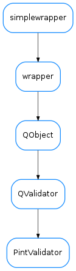

PintValidator¶

-
class
PintValidator[source]¶ Bases:
PyQt4.QtGui.QValidatorA QValidator for pint Quantities
-
bottom¶ Return type: QuantityorNoneReturns: minimum accepted or None if it is not enforced
-
setBottom(bottom)[source]¶ Set minimum limit
Parameters: bottom ( QuantityorNone) – minimum acceptable value or None if it is not to be enforced
-
setTop(top)[source]¶ Set maximum limit
Parameters: top ( QuantityorNone) – maximum acceptable value or None if it is not to be enforced
-
setUnits(units)[source]¶ Set implicit units. They will be assumed when the text does not explicit the unit. They will also be used for dimensionality coherence checks.
Parameters: units ( UnitorNone) – . The implicit unit. If None, implicit dimension is “unitless” and no dimensionality checks will be performed (other than those inherent to range enforcement)
-
top¶ Return type: QuantityorNoneReturns: maximum accepted or None if it is not enforced
-
units¶ Return type: UnitorNoneReturns: base units or None if it should not be enforced
-
validate(input, pos)¶ Reimplemented from
QValidatorto validate if the input string is a representation of a quantity within the set bottom and top limits
-